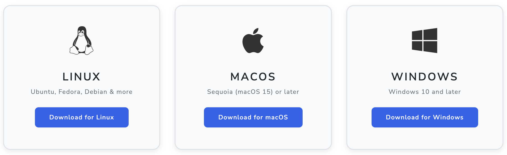
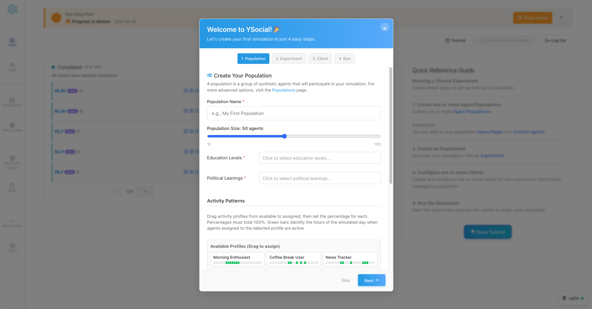
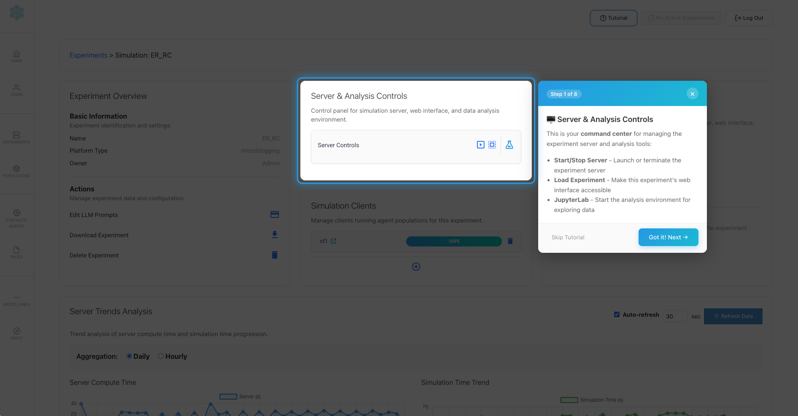

Every YSocial release tells part of a story, a new step of our journey.
From the very beginning, YSocial had a bold vision: build a social media simulator so intuitive that anyone — not just computer scientists — could use it effortlessly.
We started with a precise roadmap:
- v0.x focused on establishing a solid simulation core (YServer and YClient) and basic social media features, designed for researchers to use.
- v1.x made a first step towards usability, introducing the web interface to make simulations configuration and visualization more accessible.
- v2.x expanded on that foundation, adding more features, improving stability, and refining the user experience based on community feedback.
With v3.0.0, we’re taking a giant leap forward towards our ultimate goal: making YSocial a truly accessible platform for everyone.
This release is about accessibility, reliability, and communication.
And it brings some of the most meaningful upgrades we’ve ever shipped.
🌐 A New Home
Let’s start from the outside.
YSocial now lives at www.y-not.social, a domain that reflects the project’s spirit:
Why not experiment? Why not simulate? Why not rethink how online societies work?
The website has been reorganized — cleaner structure, clearer navigation.
Resources are easier to find, and the documentation has been revamped for clarity.
It’s the new hub for the entire YSocial ecosystem.
🎬 Meet YSocial
Understanding what YSocial does is now easier than ever.
Thanks to NotebookLM, we’ve created and accessible video introduction that explains the project’s purpose, capabilities, and scientific vision.
Perfect for newcomers, classrooms, and presentations.
Share it, embed it, and spread the word!
⚡ One-Click Installation
YSocial v3.0.0 brings one of the most impactful improvements in the project’s history: true accessibility for everyone.
For the first time, YSocial includes native support for Linux, macOS, and Windows, eliminating OS-specific hacks and ensuring a unified experience across all major platforms. Whether you’re a researcher, educator, or student, YSocial now runs seamlessly on your preferred environment.
And to make things even easier, we’re introducing a brand-new one-click installer. It automatically handles dependencies and configuration, allowing anyone to get started without setup headaches.
It may take a moment to launch — that’s the trade-off of a single-file app — but once it’s running, it just works.

Cross-platform freedom and frictionless installation together make v3.0.0 our most accessible and user-friendly release to date.
🎉 New Onboarding Experience
Getting started with YSocial has never been easier.
The new onboarding experience tutorial is designed to guide you through the creation of your first, simple, experiment.
Learn quickly the basis, and elements, of the platform’s and start experimenting right away.
Just focus on the essentials:
- Create your first population
- Create your first experiment
- Configure your first client
- Run your first simulation

All the details and advanced options can be explored later, once you’re comfortable with the basics.
Restart the tutorial anytime to revisit key concepts.

Moreover, if you’re unsure how to navigate the admin interface, many pages now include their own guided tour, which you can start with a single click.
🕵️♂️ Experiments Upgraded
In this release we introduced several improvements to the experiment system, including:
- Experiment Import/Export: Easily share and reuse experiment configurations across different installations.
- Duplicate Experiment: Quickly clone existing experiments to modify parameters without starting from scratch.
- Experiment Scheduling: Effortlessly automate experiment runs — schedule multiple groups to run sequentially while running experiments in parallel within each group, all with a single click.
- Watchdog Support: Monitor running experiments and automatically restart them if they crash or hang, ensuring long-running simulations complete successfully.
- Experiment Execution stats: New graphs and charts to track experiment progress and performance over time.
👥 Hierarchical Users Roles
Managing multiple types of users is now more straightforward with the introduction of hierarchical user roles. Assign different permissions to users based on their roles:
- Admin: Full access to all features and settings.
- Researcher: Access to experiment creation and management.
- User: Access only to the hybrid simulations they are assigned to.
This structure allows to compartmentalize experiment management (each researcher can manage their own experiments without interfering with others) and improves security by limiting access to sensitive features.
Additionally, non-privileged user management now makes it easy to run hybrid simulations with human participants—without giving access to admin features.
📊 Smarter Diagnostics with yTelemetry
As YSocial grows, so does the need to understand how it performs in real-world environments.
yTelemetry is our new, fully **GDPR-compliant** telemetry and diagnostics service. It collects:
- Anonymous usage patterns
- Crash stack traces
- Non-identifying system information
All strictly opt-out and designed with privacy in mind.
This allows us to catch rare bugs early and keep YSocial stable for everyone. Check out all details about what we collect in the download page and feel free to inspect its implementation.
And don’t worry — if you prefer not to share any data, you can easily disable telemetry in the settings. Although we strongly encourage keeping it enabled to help us improve YSocial for the entire community.
🔔 In App Y Announcements & News
Communication shouldn’t require leaving your workspace.
v3.0.0 adds in-app announcements that notify you about:
- New versions
- Bug-fix releases
- Important project updates
Think of it as a tiny newsroom inside YSocial.
No more checking websites or GitHub commits — stay informed without breaking your flow.
🎉 Together Into the Next Phase
YSocial v3.0.0 isn’t just a feature update — it’s the beginning of a more accessible, more polished, and more communicative era for the project.
With a new domain, improved onboarding, smarter diagnostics, and a clearer web presence, YSocial is ready to support a growing global community of researchers and developers.
Start exploring the new release at www.y-not.social
And thank you for being part of this journey and remember:
Life before death, strength before weakness, journey before destination.
— The Stormlight Archive, The Way of Kings